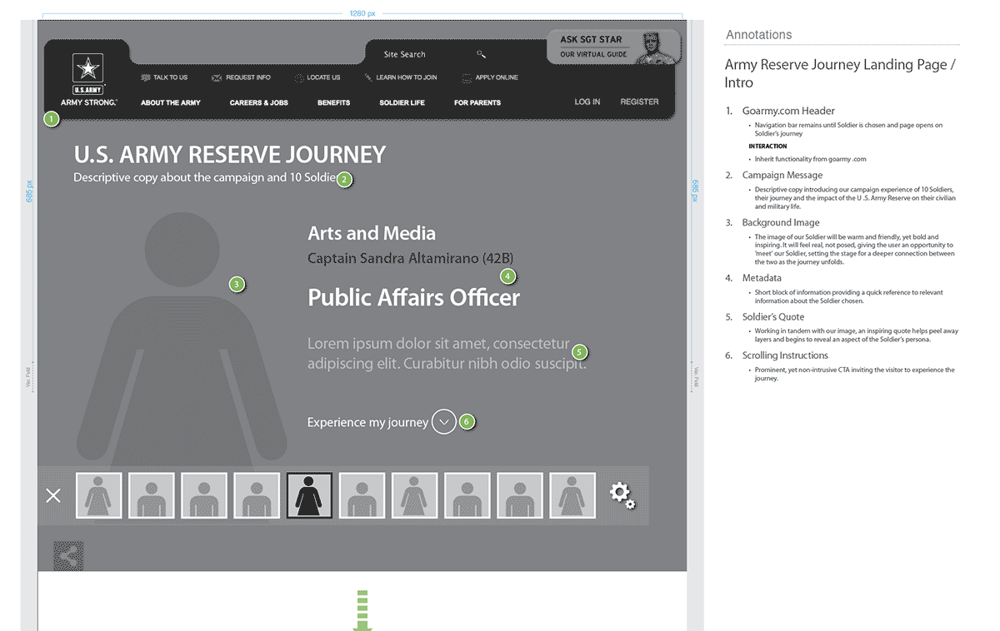

- Date: December 2013
- Roles: Analyze, Design
- Tools: Adobe InDesign, Adobe PDF
" Website "
The assignment was to documenting the life stories of 10 soldiers, for the creation of a website for the U.S. Army Reserve. The site would promote the depths of the Army's offerings, and showcase the abundant career opportunities in an immersive, and compelling manner.
It was necessary for me to work closely with, and provide support to strategy and design in preparing solid deliverables.
Handpick ten soldiers with unique U.S. Army careers and prepare compelling stories by contrasting their lives as a U.S. Army Reserve personnel, and regular life as a civilian. The design would be an immersive user-centered experience highlighting the many benefits and accomplishments of each soldier.
It was crucial for the user to be able to connect with each soldier’s story on an emotional level and clearly understand that a healthy family and social life wasn't a sacrifice as they give back to their country within the U.S. Army Reserve.
The homepage design provided an introduction to each soldier within a user-controlled environment. The user could then springboard to learn more about any soldier.
A clean, sexy, minimalistic interface allowed for videos, interactive tools, large imagery, quotes and compositions to tell the story of each soldier's life. For uniformity, each story consisted of 4 chapters, with one (1) or more sections, and provided call-to-actions for contacting the soldier or connecting with them via their social communities.
There was also the provision to communicate with a U.S. Army Reserve recruiter for additional information.
The campaign was well received, and the client was blown away with the strategic approach and design solutions. The client complimented the team on delivering what was tagged the best UX documentation ever presented.